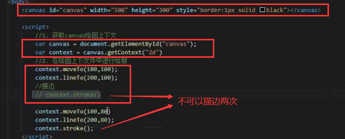
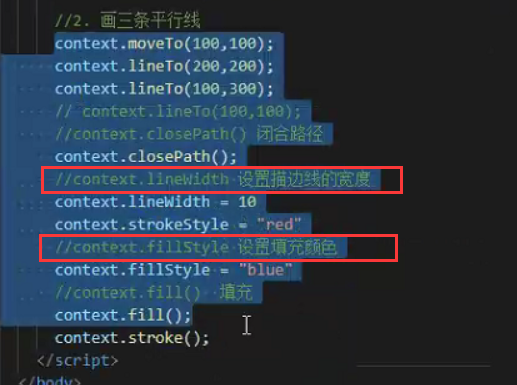
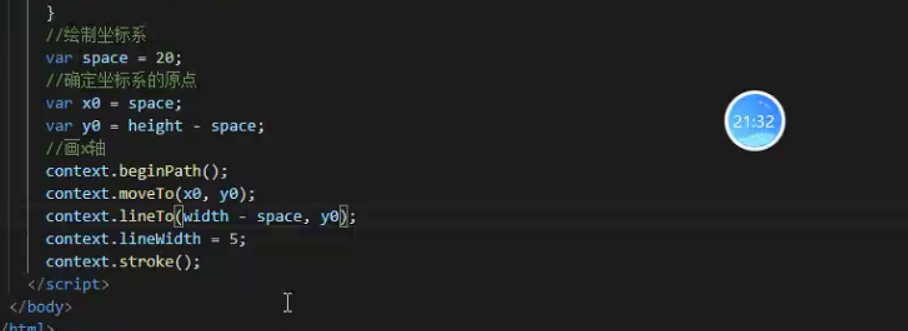
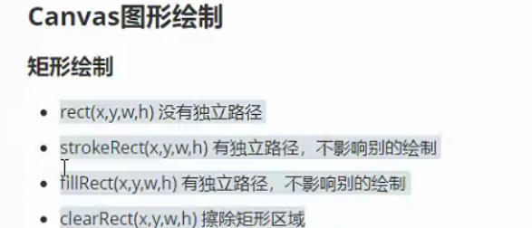
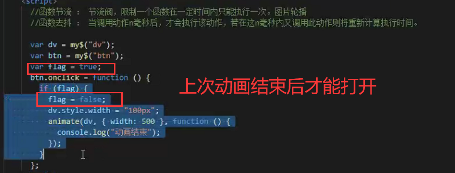

Canvas笔记day01 2021-09-18 Canvas Canvas 是什么？Cansvas 是画布  如果要画1px的线一定要定位在0.5的位置 否则会画2px的线 如果要把两条边设置成不同颜色，需要各描边一次 context.beginPath（）表示开启一个新的路径 context.closePath()闭合描边     当有一些事件频繁的被触发时，需要函数去抖，最后一次调用定时器时才会被触发 context是上下文 本作品采用 知识共享署名-非商业性使用-禁止演绎 4.0 国际许可协议 进行许可。 下一篇 代码BUG如何解决？ 上一篇 Hello World 分享